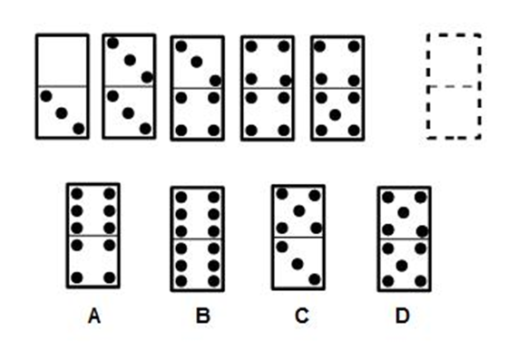

📖 Descripción conceptual
Domino
Los ejercicios con fichas de dominó se caracterizan por sus patrones cuantitativos. No requieren mayores cálculos porque, como todos sabemos, las fichas tienen puntos que van desde el 0 hasta el 6.
Lo que debes hacer es identificar patrones y relaciones entre los puntos (sus cantidades) y su localización en la mitad superior o inferior de varias fichas, a efectos de predecir qué cantidad de puntos y en dónde habrán de ubicarse en la ficha que se te pide “llenes”.
Ejemplo:

(2023). Psicotest365.com. https://psicotest365.com/wp-content/uploads/2019/02/test-de-domin%C3%B3-ejemplo-1.jpg
Existe una secuencia de fichas dobles que siempre tiene su origen en el denominador de la ficha anterior. Es decir, el denominador de la primera ficha (3) condiciona que la siguiente ficha de dominó sea 3 doble y así sucesivamente. Esto implica que la respuesta correcta a este test de dominó sea la opción “D” .